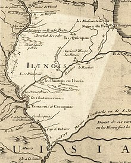
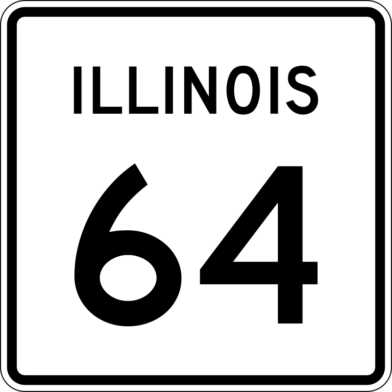

Illinois (/ˌɪlɪˈnɔɪ/ (listen) IL-in-OY) is a state in the Midwestern United States. It shares borders with Wisconsin to its north, Iowa to its northwest, Missouri to its southwest, Kentucky to its south, and Indiana to its east. Its largest metropolitan areas include the Chicago metropolitan area, and the Metro East section, of Greater St. Louis. Other metropolitan areas include Peoria and Rockford, as well as Springfield, its capital. Of the fifty U.S. states, Illinois has the fifth-largest gross domestic product (GDP), the sixth-largest population, and the 25th-largest land area.

Illinois has a highly diverse economy, with the global city of Chicago in the northeast, major industrial and agricultural hubs in the north and center, and natural resources such as coal, timber, and petroleum in the south. Owing to its central location and favorable geography, the state is a major transportation hub: the Port of Chicago has access to the Atlantic Ocean through the Great Lakes and Saint Lawrence Seaway and to the Gulf of Mexico from the Mississippi River via the Illinois Waterway. Additionally, the Mississippi, Ohio, and Wabash rivers form parts of the state's boundaries. Chicago's O'Hare International Airport has been among the world's ten busiest airports for decades. Illinois has long been considered a microcosm of the United States and a bellwether in American culture, exemplified by the phrase Will it play in Peoria?.[6]
What is now Illinois was inhabited for thousands of years by various indigenous cultures, including the advanced civilization centered in the Cahokia region. The French were the first Europeans to arrive, settling near the Mississippi River in the 17th century, in the region they called Illinois Country, as part of the sprawling colony of New France. Following U.S. independence in 1783, American settlers began arriving from Kentucky via the Ohio River, and the population grew from south to north. Illinois was part of the United States' oldest territory, the Northwest Territory, and in 1818 it achieved statehood. The Erie Canal brought increased commercial activity in the Great Lakes, and the small settlement of Chicago became one of the fastest growing cities in the world, benefiting from its location as one of the few natural harbors in southwestern Lake Michigan.[7] The invention of the self-scouring steel plow by Illinoisan John Deere turned the state's rich prairie into some of the world's most productive and valuable farmland, attracting immigrant farmers from Germany and Sweden. In the mid-19th century, the Illinois and Michigan Canal and a sprawling railroad network greatly facilitated trade, commerce, and settlement, making the state a transportation hub for the nation.[8]
By 1900, the growth of industrial jobs in the northern cities, and coal mining in the central and southern areas, attracted immigrants from Eastern and Southern Europe. Illinois became one of America's most industrialized states and remains a major manufacturing center.[9] The Great Migration from the South established a large community of African Americans, particularly in Chicago, who founded the city's famous jazz and blues cultures.[10][11] Chicago became a leading cultural, economic, and population center and is today one of the world's major commercial centers; its metropolitan area, informally referred to as Chicagoland, holds about 65% of the state's 12.8 million residents.
Three U.S. presidents have been elected while living in Illinois: Abraham Lincoln, Ulysses S. Grant, and Barack Obama; additionally, Ronald Reagan was born and raised in the state. Today, Illinois honors Lincoln with its official state slogan Land of Lincoln, which has been displayed on its license plates since 1954.[12][13] The state is the site of the Abraham Lincoln Presidential Library and Museum in Springfield and the future home of the Barack Obama Presidential Center in Chicago.
Etymology
See also: Illinois Confederation and List of counties in Illinois
"Illinois" is the modern spelling for the early French Catholic missionaries and explorers' name for the Illinois Native Americans, a name that was spelled in many different ways in the early records.[14]
American scholars previously thought the name Illinois meant 'man' or 'men' in the Miami-Illinois language, with the original iliniwek transformed via French into Illinois.[15][16] This etymology is not supported by the Illinois language,[citation needed] as the word for "man" is ireniwa, and plural of "man" is ireniwaki. The name Illiniwek has also been said to mean 'tribe of superior men',[17] which is a false etymology. The name Illinois derives from the Miami-Illinois verb irenwe·wa 'he speaks the regular way'. This was taken into the Ojibwe language, perhaps in the Ottawa dialect, and modified into ilinwe· (pluralized as ilinwe·k). The French borrowed these forms, spelling the /we/ ending as -ois, a transliteration of that sound in the French of that time. The current spelling form, Illinois, began to appear in the early 1670s, when French colonists had settled in the western area. The Illinois's name for themselves, as attested in all three of the French missionary-period dictionaries of Illinois, was Inoka, of unknown meaning and unrelated to the other terms.[18][19]

History
Main article: History of Illinois
Pre-European
Mississippian copper plate found at the Saddle Site in Union County, Illinois
American Indians of successive cultures lived along the waterways of the Illinois area for thousands of years before the arrival of Europeans. The Koster Site has been excavated and demonstrates 7,000 years of continuous habitation. Cahokia, the largest regional chiefdom and Urban Center of the Pre-Columbian Mississippian culture, was located near present-day Collinsville, Illinois. They built an urban complex of more than 100 platform and burial mounds, a 50-acre (20 ha) plaza larger than 35 football fields,[20] and a woodhenge of sacred cedar, all in a planned design expressing the culture's cosmology. Monks Mound, the center of the site, is the largest Pre-Columbian structure north of the Valley of Mexico. It is 100 ft (30 m) high, 951 ft (290 m) long, 836 ft (255 m) wide, and covers 13.8 acres (5.6 ha).[21] It contains about 814,000 cu yd (622,000 m3) of earth.[22] It was topped by a structure thought to have measured about 105 ft (32 m) in length and 48 ft (15 m) in width, covered an area 5,000 sq ft (460 m2), and been as much as 50 ft (15 m) high, making its peak 150 ft (46 m) above the level of the plaza. The finely crafted ornaments and tools recovered by archaeologists at Cahokia include elaborate ceramics, finely sculptured stonework, carefully embossed and engraved copper and mica sheets, and one funeral blanket for an important chief fashioned from 20,000 shell beads. These artifacts indicate that Cahokia was truly an urban center, with clustered housing, markets, and specialists in toolmaking, hide dressing, potting, jewelry making, shell engraving, weaving and salt making.[23]
The civilization vanished in the 15th century for unknown reasons, but historians and archeologists have speculated that the people depleted the area of resources. Many indigenous tribes engaged in constant warfare. According to Suzanne Austin Alchon, "At one site in the central Illinois River valley, one third of all adults died as a result of violent injuries."[24] The next major power in the region was the Illinois Confederation or Illini, a political alliance.[25] As the Illini declined during the Beaver Wars era, members of the Algonquian-speaking Potawatomi, Miami, Sauk, and other tribes including the Fox (Meskwaki), Iowa, Kickapoo, Mascouten, Piankeshaw, Shawnee, Wea, and Winnebago (Ho-Chunk) came into the area from the east and north around the Great Lakes.[26][27]
European exploration and settlement prior to 1800
Main articles: New France; Louisiana (New France); Canada (New France); Illinois Country; French and Indian War; Treaty of Paris (1763); Province of Quebec (1763–1791); Indian Reserve (1763); American Revolutionary War; Western theater of the American Revolutionary War; Illinois County, Virginia; Treaty of Paris (1783); Northwest Ordinance; and Northwest Territory
Illinois in 1718, approximate modern state area highlighted, from Carte de la Louisiane et du cours du Mississipi by Guillaume de L'Isle[28]
French explorers Jacques Marquette and Louis Jolliet explored the Illinois River in 1673. Marquette soon after founded a mission at the Grand Village of the Illinois in Illinois Country. In 1680, French explorers under René-Robert Cavelier, Sieur de La Salle and Henri de Tonti constructed a fort at the site of present-day Peoria, and in 1682, a fort atop Starved Rock in today's Starved Rock State Park. French Empire Canadiens came south to settle particularly along the Mississippi River, and Illinois was part of first New France, and then of La Louisiane until 1763, when it passed to the British with their defeat of France in the Seven Years' War. The small French settlements continued, although many French migrated west to Ste. Genevieve and St. Louis, Missouri, to evade British rule.[29]
A few British soldiers were posted in Illinois, but few British or American settlers moved there, as the Crown made it part of the territory reserved for Indians west of the Appalachians, and then part of the British Province of Quebec. In 1778, George Rogers Clark claimed Illinois County for Virginia. In a compromise, Virginia (and other states that made various claims) ceded the area to the new United States in the 1780s and it became part of the Northwest Territory, administered by the federal government and later organized as states.[29]
19th century
Main articles: Indiana Territory, Organic act § List of organic acts, Illinois Territory, Admission to the Union, and List of U.S. states by date of admission to the Union
See also: History of Chicago and History of Nauvoo, Illinois
Prior to statehood
The bell donated by King Louis XV in 1741 to the French mission at Kaskaskia. It was later called the "Liberty Bell of the West", after it was rung to celebrate U.S. victory in the Revolution
The Illinois-Wabash Company was an early claimant to much of Illinois. The Illinois Territory was created on February 3, 1809, with its capital at Kaskaskia, an early French settlement.
During the discussions leading up to Illinois's admission to the Union, the proposed northern boundary of the state was moved twice.[30] The original provisions of the Northwest Ordinance had specified a boundary that would have been tangent to the southern tip of Lake Michigan. Such a boundary would have left Illinois with no shoreline on Lake Michigan at all. However, as Indiana had successfully been granted a 10 mi (16 km) northern extension of its boundary to provide it with a usable lakefront, the original bill for Illinois statehood, submitted to Congress on January 23, 1818, stipulated a northern border at the same latitude as Indiana's, which is defined as 10 miles north of the southernmost extremity of Lake Michigan. However, the Illinois delegate, Nathaniel Pope, wanted more, and lobbied to have the boundary moved further north. The final bill passed by Congress included an amendment to shift the border to 42° 30' north, which is approximately 51 mi (82 km) north of the Indiana northern border. This shift added 8,500 sq mi (22,000 km2) to the state, including the lead mining region near Galena. More importantly, it added nearly 50 miles of Lake Michigan shoreline and the Chicago River. Pope and others envisioned a canal that would connect the Chicago and Illinois rivers and thus connect the Great Lakes to the Mississippi.
The State of Illinois prior to the Civil War
In 1818, Illinois became the 21st U.S. state. The southern portion of Illinois Territory was admitted as the state of Illinois, and the rest was joined to Michigan Territory.
Old State Capitol: Abraham Lincoln and other area legislators were instrumental in moving the state capitol to centrally located Springfield in 1839.
In 1818, Illinois became the 21st U.S. state. The capital remained at Kaskaskia, headquartered in a small building rented by the state. In 1819, Vandalia became the capital, and over the next 18 years, three separate buildings were built to serve successively as the capitol building. In 1837, the state legislators representing Sangamon County, under the leadership of state representative Abraham Lincoln, succeeded in having the capital moved to Springfield,[31] where a fifth capitol building was constructed. A sixth capitol building was erected in 1867, which continues to serve as the Illinois capitol today.
Though it was ostensibly a "free state", there was nonetheless slavery in Illinois. The ethnic French had owned black slaves since the 1720s, and American settlers had already brought slaves into the area from Kentucky. Slavery was nominally banned by the Northwest Ordinance, but that was not enforced for those already holding slaves. When Illinois became a state in 1818, the Ordinance no longer applied, and about 900 slaves were held in the state. As the southern part of the state, later known as "Egypt" or "Little Egypt",[32][33] was largely settled by migrants from the South, the section was hostile to free blacks. Settlers were allowed to bring slaves with them for labor, but, in 1822, state residents voted against making slavery legal. Still, most residents opposed allowing free blacks as permanent residents. Some settlers brought in slaves seasonally or as house servants.[34] The Illinois Constitution of 1848 was written with a provision for exclusionary laws to be passed. In 1853, John A. Logan helped pass a law to prohibit all African Americans, including freedmen, from settling in the state.[35]
The winter of 1830–1831 is called the "Winter of the Deep Snow";[36] a sudden, deep snowfall blanketed the state, making travel impossible for the rest of the winter, and many travelers perished. Several severe winters followed, including the "Winter of the Sudden Freeze". On December 20, 1836, a fast-moving cold front passed through, freezing puddles in minutes and killing many travelers who could not reach shelter. The adverse weather resulted in crop failures in the northern part of the state. The southern part of the state shipped food north, and this may have contributed to its name, "Little Egypt", after the Biblical story of Joseph in Egypt supplying grain to his brothers.[37]
In 1832, the Black Hawk War was fought in Illinois and present-day Wisconsin between the United States and the Sauk, Fox (Meskwaki), and Kickapoo Indian tribes. It represents the end of Indian resistance to white settlement in the Chicago region.[38] The Indians had been forced to leave their homes and move to Iowa in 1831; when they attempted to return, they were attacked and eventually defeated by U.S. militia. The survivors were forced back to Iowa.[39]
By 1839, the Latter Day Saints had founded a utopian city called Nauvoo, formerly called Commerce. Located in Hancock County along the Mississippi River, Nauvoo flourished and, by 1844, briefly surpassed Chicago for the position of the state's largest city.[40][41] But in that same year, the Latter Day Saint movement founder, Joseph Smith, was killed in the Carthage Jail, about 30 miles away from Nauvoo. Following a succession crisis, Brigham Young led most Latter Day Saints out of Illinois in a mass exodus to present-day Utah; after close to six years of rapid development, Nauvoo quickly declined afterward.
After it was established in 1833, Chicago gained prominence as a Great Lakes port, and then as an Illinois and Michigan Canal port after 1848, and as a rail hub soon afterward. By 1857, Chicago was Illinois's largest city.[29] With the tremendous growth of mines and factories in the state in the 19th century, Illinois was the ground for the formation of labor unions in the United States.
In 1847, after lobbying by Dorothea L. Dix, Illinois became one of the first states to establish a system of state-supported treatment of mental illness and disabilities, replacing local almshouses. Dix came into this effort after having met J. O. King, a Jacksonville, Illinois businessman, who invited her to Illinois, where he had been working to build an asylum for the insane. With the lobbying expertise of Dix, plans for the Jacksonville State Hospital (now known as the Jacksonville Developmental Center) were signed into law on March 1, 1847.[42]
Civil War and after
Main article: Illinois in the American Civil War
Union troops embarking at Cairo on January 10, 1862
During the American Civil War, Illinois ranked fourth in soldiers who served (more than 250,000) in the Union Army, a figure surpassed by only New York, Pennsylvania, and Ohio. Beginning with President Abraham Lincoln's first call for troops and continuing throughout the war, Illinois mustered 150 infantry regiments, which were numbered from the 7th to the 156th regiments. Seventeen cavalry regiments were also gathered, as well as two light artillery regiments.[43] The town of Cairo, at the southern tip of the state at the confluence of the Mississippi and Ohio Rivers, served as a strategically important supply base and training center for the Union army. For several months, both General Grant and Admiral Foote had headquarters in Cairo.
During the Civil War, and more so afterwards, Chicago's population skyrocketed, which increased its prominence. The Pullman Strike and Haymarket Riot, in particular, greatly influenced the development of the American labor movement. From Sunday, October 8, 1871, until Tuesday, October 10, 1871, the Great Chicago Fire burned in downtown Chicago, destroying four sq mi (10 km2).[44]
20th century
At the turn of the 20th century, Illinois had a population of nearly 5 million. Many people from other parts of the country were attracted to the state by employment caused by the expanding industrial base. Whites were 98% of the state's population.[45] Bolstered by continued immigration from southern and eastern Europe, and by the African-American Great Migration from the South, Illinois grew and emerged as one of the most important states in the union. By the end of the century, the population had reached 12.4 million.
The Century of Progress World's fair was held at Chicago in 1933. Oil strikes in Marion County and Crawford County led to a boom in 1937, and by 1939, Illinois ranked fourth in U.S. oil production. Illinois manufactured 6.1 percent of total United States military armaments produced during World War II, ranking seventh among the 48 states.[46] Chicago became an ocean port with the opening of the Saint Lawrence Seaway in 1959. The seaway and the Illinois Waterway connected Chicago to both the Mississippi River and the Atlantic Ocean. In 1960, Ray Kroc opened the first McDonald's franchise in Des Plaines (which still exists as a museum, with a working McDonald's across the street).
Illinois had a prominent role in the emergence of the nuclear age. In 1942, as part of the Manhattan Project, the University of Chicago conducted the first sustained nuclear chain reaction. In 1957, Argonne National Laboratory, near Chicago, activated the first experimental nuclear power generating system in the United States. By 1960, the first privately financed nuclear plant in the United States, Dresden 1, was dedicated near Morris. In 1967, Fermilab, a national nuclear research facility near Batavia, opened a particle accelerator, which was the world's largest for over 40 years. With eleven plants currently operating, Illinois leads all states in the amount of electricity generated from nuclear power.[47][48]
In 1961, Illinois became the first state in the nation to adopt the recommendation of the American Law Institute and pass a comprehensive criminal code revision that repealed the law against sodomy. The code also abrogated common law crimes and established an age of consent of 18.[49] The state's fourth constitution was adopted in 1970, replacing the 1870 document.[50]
The first Farm Aid concert was held in Champaign to benefit American farmers, in 1985. The worst upper Mississippi River flood of the century, the Great Flood of 1993, inundated many towns and thousands of acres of farmland.[29]
21st century
On August 28, 2017, Illinois Governor Bruce Rauner signed a bill into law that prohibited state and local police from arresting anyone solely due to their immigration status or due to federal detainers.[51][52] Some fellow Republicans criticized Rauner for his action, claiming the bill made Illinois a sanctuary state.[53]
Geology
Main article: Geology of Illinois
During the early part of the Paleozoic Era, the area that would one day become Illinois was submerged beneath a shallow sea and located near the Equator. Diverse marine life lived at this time, including trilobites, brachiopods, and crinoids. Changing environmental conditions led to the formation of large coal swamps in the Carboniferous.
Illinois was above sea level for at least part of the Mesozoic, but by its end was again submerged by the Western Interior Seaway. This receded by the Eocene Epoch.
During the Pleistocene Epoch, vast ice sheets covered much of Illinois, with only the Driftless Area remaining exposed. These glaciers carved the basin of Lake Michigan and left behind traces of ancient glacial lakes and moraines.[54]
Geography
Main article: Geography of Illinois
Further information: List of ecoregions in Illinois
Illinois is located in the Midwest region of the United States and is one of the eight states in the Great Lakes region of North America (which also includes Ontario, Canada).
Boundaries
Illinois's eastern border with Indiana consists of a north–south line at 87° 31′ 30″ west longitude in Lake Michigan at the north, to the Wabash River in the south above Post Vincennes. The Wabash River continues as the eastern/southeastern border with Indiana until the Wabash enters the Ohio River. This marks the beginning of Illinois's southern border with Kentucky, which runs along the northern shoreline of the Ohio River.[55] Most of the western border with Missouri and Iowa is the Mississippi River; Kaskaskia is an exclave of Illinois, lying west of the Mississippi and reachable only from Missouri. The state's northern border with Wisconsin is fixed at 42° 30′ north latitude. The northeastern border of Illinois lies in Lake Michigan, within which Illinois shares a water boundary with the state of Michigan, as well as Wisconsin and Indiana.[26]
Topography
Charles Mound, the highest natural point in Illinois at 1,235 feet (376 m) above sea level, is located in the Driftless Area in the northwestern part of the state.
Though Illinois lies entirely in the Interior Plains, it does have some minor variation in its elevation. In extreme northwestern Illinois, the Driftless Area, a region of unglaciated and therefore higher and more rugged topography, occupies a small part of the state. Southern Illinois includes the hilly areas around the Shawnee National Forest.
Charles Mound, located in the Driftless region, has the state's highest natural elevation above sea level at 1,235 ft (376 m). Other highlands include the Shawnee Hills in the south, and there is varying topography along its rivers; the Illinois River bisects the state northeast to southwest. The floodplain on the Mississippi River from Alton to the Kaskaskia River is known as the American Bottom.
Divisions
At 279 feet (85 m) above sea level,[56] the lowest elevation point in the state is located near Cairo and the confluence of the Ohio and Mississippi Rivers.
Illinois has three major geographical divisions. Northern Illinois is dominated by Chicago metropolitan area, or Chicagoland, which is the city of Chicago and its suburbs, and the adjoining exurban area into which the metropolis is expanding. As defined by the federal government, the Chicago metro area includes several counties in Illinois, Indiana, and Wisconsin, and has a population of over 9.8 million. Chicago itself is a cosmopolitan city, densely populated, industrialized, the transportation hub of the nation, and settled by a wide variety of ethnic groups. The city of Rockford, Illinois's third-largest city and center of the state's fourth largest metropolitan area, sits along Interstates 39 and 90 some 75 mi (121 km) northwest of Chicago. The Quad Cities region, located along the Mississippi River in northern Illinois, had a population of 381,342 in 2011.
The midsection of Illinois is the second major division, called Central Illinois. Historically prairie, it is now mainly agricultural and known as the Heart of Illinois. It is characterized by small towns and medium–small cities. The western section (west of the Illinois River) was originally part of the Military Tract of 1812 and forms the conspicuous western bulge of the state. Agriculture, particularly corn and soybeans, as well as educational institutions and manufacturing centers, figure prominently in Central Illinois. Cities include Peoria; Springfield, the state capital; Quincy; Decatur; Bloomington-Normal; and Champaign-Urbana.[26]
The third division is Southern Illinois, comprising the area south of U.S. Route 50, including Little Egypt, near the juncture of the Mississippi River and Ohio River. Southern Illinois is the site of the ancient city of Cahokia, as well as the site of the first state capital at Kaskaskia, which today is separated from the rest of the state by the Mississippi River.[26][57] This region has a somewhat warmer winter climate, different variety of crops (including some cotton farming in the past), more rugged topography (due to the area remaining unglaciated during the Illinoian Stage, unlike most of the rest of the state), as well as small-scale oil deposits and coal mining. The Illinois suburbs of St. Louis, such as East St. Louis, are located in this region, and collectively, they are known as the Metro-East. The other somewhat significant concentration of population in Southern Illinois is the Carbondale-Marion-Herrin, Illinois Combined Statistical Area centered on Carbondale and Marion, a two-county area that is home to 123,272 residents.[26] A portion of southeastern Illinois is part of the extended Evansville, Indiana, Metro Area, locally referred to as the Tri-State with Indiana and Kentucky. Seven Illinois counties are in the area.
In addition to these three, largely latitudinally defined divisions, all of the region outside the Chicago metropolitan area is often called "downstate" Illinois. This term is flexible, but is generally meant to mean everything outside the influence of the Chicago area. Thus, some cities in Northern Illinois, such as DeKalb, which is west of Chicago, and Rockford—which is actually north of Chicago—are sometimes incorrectly considered to be 'downstate'.
Climate
Main article: Climate of Illinois
See also: St. Louis tornado history
Köppen climate types of Illinois
Illinois has a climate that varies widely throughout the year. Because of its nearly 400-mile distance between its northernmost and southernmost extremes, as well as its mid-continental situation, most of Illinois has a humid continental climate (Köppen climate classification Dfa), with hot, humid summers and cold winters. The southern part of the state, from about Carbondale southward, has a humid subtropical climate (Koppen Cfa), with more moderate winters. Average yearly precipitation for Illinois varies from just over 48 in (1,219 mm) at the southern tip to around 35 in (889 mm) in the northern portion of the state. Normal annual snowfall exceeds 38 in (965 mm) in the Chicago area, while the southern portion of the state normally receives less than 14 in (356 mm).[58] The all-time high temperature was 117 °F (47 °C), recorded on July 14, 1954, at East St. Louis, and the all-time low temperature was −38 °F (−39 °C), recorded on January 31, 2019, during the January 2019 North American cold wave at a weather station near Mount Carroll,[59][60] and confirmed on March 5, 2019.[61] This followed the previous record of −36 °F (−38 °C) recorded on January 5, 1999, near Congerville.[61] Prior to the Mount Carroll record, a temperature of −37 °F (−38 °C) was recorded on January 15, 2009, at Rochelle, but at a weather station not subjected to the same quality control as official records.[62][63]
Illinois averages approximately 51 days of thunderstorm activity a year, which ranks somewhat above average in the number of thunderstorm days for the United States. Illinois is vulnerable to tornadoes, with an average of 35 occurring annually, which puts much of the state at around five tornadoes per 10,000 sq mi (30,000 km2) annually.[64] While tornadoes are no more powerful in Illinois than other states, some of Tornado Alley's deadliest tornadoes on record have occurred in the state. The Tri-State Tornado of 1925 killed 695 people in three states; 613 of the victims died in Illinois.[65]